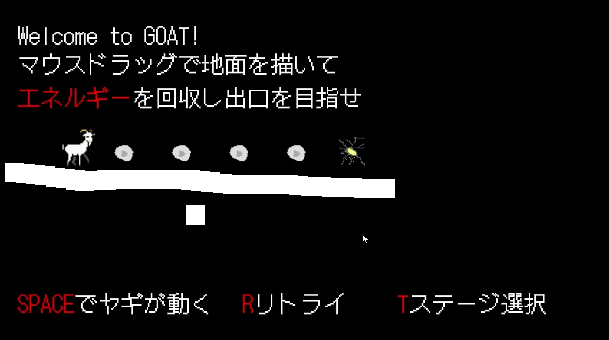
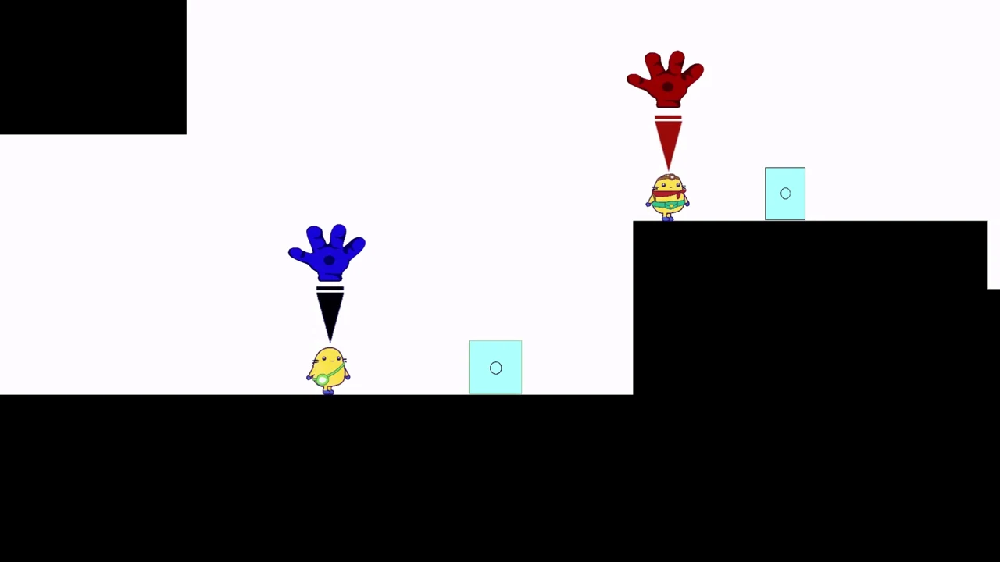
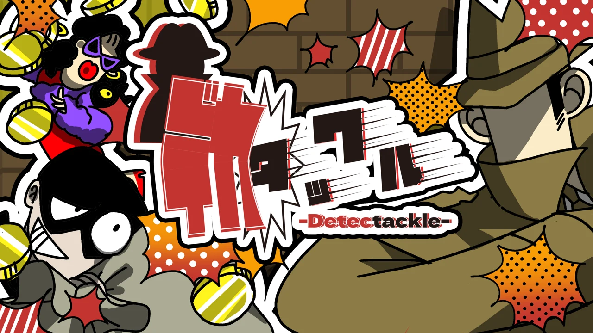
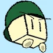
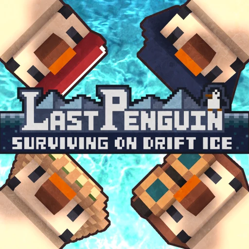

Unity / C# / VR
BeyondTheSausage
ソーセージを題材にしたVRゲーム。Made in Japan XR Projectの最終選抜チームとして、約50万円の支援を受けながら開発中。
Made in Japan XR Project 最終選抜
開発中 / 支援プログラム採択GAME PROGRAMMER PORTFOLIO
ゲームプログラマー・ゲームプランナーを目指す 岡 佑亮 の制作記録。
ゲーム作品と、その中で取り組んだ技術を紹介します。
01 / ABOUT
GitHub: okayu2345
高校：岡山県立総社南高等学校
大学：岡山理科大学 情報理工学部 情報理工学科 デジタルゲームメディアコース
学年：3年生
研究室：ゲーム工学研究室
卒業予定：2028年
ゲーム内の仕組みや動作を実装するゲームプログラマーと、ゲームの企画を考えるゲームプランナーを目指しています。
Unity・C#とC++・Siv3Dを使ってゲームを制作しています。短期間のゲームジャムから、企画・チームづくり・展示まで経験してきました。現在は、支援プログラムに採択されたVRゲーム「BeyondTheSausage」を開発しています。
プログラマーに加え、作品によってリードプログラマー・リーダー・プランナーも担当。デザイナーへの制作依頼と作業管理も経験しています。
HIGHLIGHTS
02 / PROJECTS
ゲームジャム・展示・支援採択を通じた6つの開発経験。
Unity / C# / VR
ソーセージを題材にしたVRゲーム。Made in Japan XR Projectの最終選抜チームとして、約50万円の支援を受けながら開発中。
Made in Japan XR Project 最終選抜
開発中 / 支援プログラム採択
C++ / Siv3D
マウスのドラッグで道をつくり、自動で動くヤギをゴールへ導く2Dパズルゲーム。企画とプログラミングを主導。
リーダー / リードプログラマー / プランナー
Siv3Dゲームジャム2025 最優秀賞
Unity / 2D
「つかむ」をテーマに、2人で協力してステージを攻略する2Dアクションゲーム。企画・開発とデザイナー4名への依頼・管理を担当。
リーダー / リードプログラマー / プランナー
Tokyo Game Show 2025 展示
Unity / 体感型ゲーム
音を頼りに、実際のタックル動作でキャラクターを操作する体験重視のゲーム。学生によるチーム開発にプログラマーとして参加。
プログラマー
BitSummitで展示
Unity / 2D
少し難しめの2Dローグライク・コイン集めゲーム。2日間のゲームジャムに、リードプログラマーとして参加。
リードプログラマー
高梁市Unityゲームジャム2025
Unity / 対戦ゲーム
ペンギンたちが互いを落とし合うバトルロワイヤルゲーム。即席チームによる2日間の開発に、プログラマーとして参加。
プログラマー
高梁市Unityゲームジャム202403 / LINKS
公開中のリポジトリはGitHubからご覧いただけます。
GitHub / okayu2345